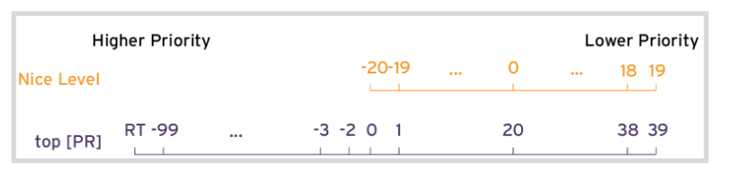

Note 3 RH134
3.1 Improving Command Line Productivity
Writing Simple Bash Scripts
The Bash interpreter start in the first line of script with #! /bin/bash and to run the script we need :
Config the execute permission on script
Have the script on
$HOME/binand call the script name or any other bin path inside your$PATH
LOOPS
Syntax of bash for loop
for <VARIABLE> in <LIST>; do
<COMMAND> <VARIABLE>
doneSample:
#1
for HOST in host1 host2 host3; do echo $HOST; done
#2
for HOST in host{1,2,3}; do echo $HOST; done
#3
for HOST in host{1..3}; do echo $HOST; done
#4
for FILE in file* ; do ls $FILE; done
#5
for FILE in file{a..c}; do ls $FILE; done
#6
for PACKAGE in $(rpm -qa | grep kernel); \
do echo "$PACKAGE was installed on \
$(date -d @$(rpm -q -qqf "%{INSTALLTIME} \n" $PACKAGE))"; done
Sequence
Sample :
#1
seq 2 2 10
output
2
4
6
8
10
#2
for EVEN in $(seq 2 2 10); do "$EVEN";doneExit Codes
0 : successfully
0 : not successfully
0 to 255 : range
To display the exit code
echo $?IF / THEN
#1
if <condition>; then
<STATEMENT>
...
<STATEMENT>
else
<STATEMENT>
...
<STATEMENT>
fi
#2
if <condition>; then
<STATEMENT>
...
<STATEMENT>
elif <condition>; then
<STATEMENT>
...
<STATEMENT>
else
<STATEMENT>
fi
Sample
systemctl is-active psacct > /dev/null 2>&1
if [ $? -ne 0 ] ; then
sudo systemctl start psacct
else
sudo systemctl stop psacct
fiRegex to match text in command outputs
Regex can be used with command as vim, grep and less
There are several options below some samples :
- Show me lines that starts with cat using
^
grep '^cat' <FILE>- Show me lines that ends with cat using
$
grep 'cat$' <FILE>- Show me lines that start and end with cat using
^and$
grep '^cat$' <FILE>- Whildcard for any character c.t
grep '^c.t$' <FILE>
Output
cat
cit
cot
cpt
cst
- Show me lines with one character of list in [xxx]
grep '^c[aou]t$' <FILE>
output
cat
cot
cut- Show me lines with c +
<characters>+ t
grep 'c.*t' <FILE>
output
cat
zuchetto
zymochemistry
- Show me lines with c +
<2 characters>+ t
Simple way ‘c..t’ but we can use modifiers :
grep 'c.\{2\}t' <FILE>
#output
Yacolt
Zacynthus
zoocultural- Show me lines that starts with c +
<starts with 2 up to 3 characters>+ t
grep 'c.\{2,3\}t' <FILE>
#output
zirconate
zoophysicist
zuchetto
zygocactus
zoocyst
grep Options
-icase insensitivity-vinvert the search-Esearch for ln and nx in particular filegrep -E 'ln|nx file'Do not show lines that starts with #
^#or blank lines^$
grep -vE '^#|^$' file- Do not show lines that starts with # or ;
grep -v '^[#;]' file3.2 Scheduling Future Tasks
One time Job : at command
atTIMESPEC command to schedule a new job Samplesat now + 5minat teatime tomorrow(teatime is 16:00)at noon + 4 daysat 5pm august 3 2021
-gspecify a queue g , queue goes a to z
*atq to check the jobs schedules on my queue
- To inspect all info about job
at -c <job number>- To remove a job
atrm <job number> - To monitor a job or queue
watch atqRecurring Jobs cron command
USER
Basic commands :
crontab -l: list the jobs for the current user- `crontab -r`` : Remove all jobs from current user
crontab -e: Edit jobscrontab <filename>: Remove all jobs and replace with the job read from filename, if no file is specified stdin is used
Once the job is schedule will have a file on /var/spool/cron/
To check the structure of contrab schedule we can check the file /etc/crontab
cat /etc/crontab
#output
SHELL=/bin/sh
PATH=/usr/local/sbin:/usr/local/bin:/sbin:/bin:/usr/sbin:/usr/bin
# Example of job definition:
# .---------------- minute (0 - 59)
# | .------------- hour (0 - 23)
# | | .---------- day of month (1 - 31)
# | | | .------- month (1 - 12) OR jan,feb,mar,apr ...
# | | | | .---- day of week (0 - 6) (Sunday=0 or 7) OR sun,mon,tue,wed,thu,fri,sat
# | | | | |
# * * * * * user-name command to be executed
- Other options
# every 5min
*/5 * * * * <xxx>
# every 5min, between 9am and 5pm Sun and Wed in July
*/5 9-16 * Jul sun, wed
- Logs : Can check the cron jobs logs on /var/log/cron
SYSTEM cron jobs
There are some ways to have a system cron jobs
- /etc/crontab
- Simple add the job on file
- /etc/cron.d/
- Add a file with job schedule on this path
- /etc/cron/
- run the command to check
ls /etc/cron\.*we can have folders with cron job files or scripts
- run the command to check
The backup mechanism of cron files is anacron and it is configured on /etc/anacrontab and the purpose is make sure that all important jobs always run
- There are different files on /var/spool/anacron for each daily, weekly and monthly jobs with timestamps based on schedule if there were a job that should be perform and machine is offline the job will be triggered
Systemd Timer Unit
This is a new scheduling function introduced on RHEL7, sample :
The sysstat package provides a systemd timer unit called sysstat-collect.timer to collect system statistics every 10 minutes. The following output shows the configuration lines of /usr/lib/systemd/system/sysstat-collect.timer.
...output omitted...
[Unit]
Description=Run system activity accounting tool every 10 minutes
[Timer]
OnCalendar=*:00/10
[Install]
WantedBy=sysstat.service- To check the timers on system
systemctl --type timerIf need to modify we can do on /etc/systemd/system and after change the timer unit config files need to reload the daemon and activate the timer unit
# Reload
systemctl daemon-reload
# Activate
systemctl enable --now <unitname>.timr
Managing Temporary Files
We can configure timers that manages temporary files.
- Some applications use /tmp to hold temp data
- Others use use specific locations such as daemon and user-specific volatile dirs under /run, when system reboot those volatile store will be gone.
The tool systemd-tmpfiles provide structured and configurable method to manage temp dirs and files
When systemd starts a system, one of the first service units launched is systemd-tmpfiles-setup. This service runs the command
systemd-tmpfiles --create --removeThis command reads configuration files from :
- /usr/lib/tmpfiles.d/*.conf,
- /run/tmpfiles.d/*.conf, and
- /etc/tmpfiles.d/*.conf.
Any files and directories marked for deletion in those configuration files is removed, and any files and directories marked for creation (or permission fixes) will be created with the correct permissions if necessary.
- Cleaning Temporary Files with a Systemd Timer
The systemd timer unit called systemd-tmpfiles-clean.timer triggered systemd-tmpfiles-clean.service on regular interval, which executes the command to clean
systemd-tmpfiles --cleanTo view the contents of the systemd-tmpfiles-clean.timer config files:
systemctl cat systemd-tmpfiles-clean.timerIf need to check the parameter frequence of clean up we need to make sure to reload and enable the timer
systemctl daemon-reload
systemctl enable --now systemd-tmpfiles.clean.timer- Cleaning Temporary Files Manually
Command :
systemd-tmpfiles --cleanthis command wll purge all files which have not been accessed, changed, or modified more recently than max age defined on config file
The format of config file systemd-tmpfiles is detailed in the tmpfiles.d manual page
Sample:
create the /run/systemd/seats directory if it does not yet exist, owned by the user root and the group root, with permissions set to rwxr-xr-x. This directory will not be automatically purged.
#Type, Path, Mode, UID, GID, Age, and Argument
d /run/systemd/seats 0755 root root -
Create the /home/student directory if it does not yet exist. If it does exist, empty it of all contents. When systemd-tmpfiles –clean is run, remove all files which have not been accessed, changed, or modified in more than one day.
#Type, Path, Mode, UID, GID, Age, and Argument
D /home/student 0700 student student 1dCreate the symbolic link /run/fstablink pointing to /etc/fstab. #Never automatically purge this line.
#Type, Path, Mode, UID, GID, Age, and Argument
L /run/fstablink - root root - /etc/fstab- Configuration File Precedence
The config file can exists in three places:
- /etc/tmpfiles.d/*.conf
- provided by the relevant RPM packages, should not edit
- /run/tmpfiles.d/*.conf
- volatile files, used by daemons
- /usr/lib/tmpfiles.d/*.conf
3.3 Tuning System Performance
tuned daemon allow us optmize system performance by selection a tunning profile
- To install and enable tuned
yum install tuned
systemctl enable --now tuned3.3.1 Profiles
balanced : Ideal for systems that require a compromise between power saving and performance.
desktop : Derived from the balanced profile. Provides faster response of interactive applications.
throughput-performance : Tunes the system for maximum throughput.
latency-performance : Ideal for server systems that require low latency at the expense of power consumption.
network-latency : Derived from the latency-performance profile. It enables additional network tuning parameters to provide low network latency.
network-throughput : Derived from the throughput-performance profile. Additional network tuning parameters are applied for maximum network throughput.
powersave : Tunes the system for maximum power saving.
oracle : Optimized for Oracle database loads based on the throughput-performance profile.
virtual-guest : Tunes the system for maximum performance if it runs on a virtual machine.
virtual-host : Tunes the system for maximum performance if it acts as a host for virtual machines
3.3.2 Managing profiles from command line
- To active
tuned-adm active- To List all available profiles
tuned-adm list- To switch the active profile to a different one
tuned-adm profile <profile_name>
tuned-adm active- To have a recommendation of profile
tuned-adm recommened- To deactivate
tuned-adm off
tuned-adm active3.3.3 Influencing Process Scheduling
Prioritize or de-prioritize specific process with nice and renice
- Nice values
- 19 : Nicest (lowest priority)
- 0 : Neutral
- -20: Least nice (highest priority)

- Display Nice Levels from the command line
ps axo pid, comm, nice, cls --sort=-nice- Start process with different Nice levels
# default nice is 10
nice sha1sum /dev/zero &
# setting to 15
nice -n 15 sha1sum &- Change the Nice level of existing process
renice -n <level> <process number>3.4 Controling Access to Files with ACLs
ACLs Access Control List are extention of permissions
- To check if file have ACL we going to see a
+on long list ouput
-rwxrw----+ 1 user operators 130 Mar 19 23:56 reports.txt- The group permission on
ls -lis masked, will not be the real permission of this file need to check ACL settings
Changing group permissions on a file with an ACL by using chmod does not change the group owner permissions, but does change the ACL mask. Use setfacl -m g::perms file if the intent is to update the file’s group owner permissions.
- View File or Directory ACLs using getfacl
command
[user@host content]$ getfacl reports.txt
# file: reports.txt
# owner: user
# group: operators
user::rwx
user:consultant3:---
user:1005:rwx #effective:rw-
group::rwx #effective:rw-
group:consultant1:r--
group:2210:rwx #effective:rw-
mask::rw-
other::---- The ACL MASK
Defines the maximum permissions that you can grant. It does not restrict permissions of the file owner or other user. all files and directories that implement ACL will have an ACL mask.
By default , the mask is recalculated whenever any of the affected ACLs are added, modified or deleted
- Changing ACL file permissions setfacl
$ setfacl -m u:name:rX file-m: modify ,xdelete
u: user,gfor group,
ofor others
name: name of userrX: permissionXuppercase can be used to indicate that execute permission should only be set on dir and not regular files, unless the file already has the relevant execute permission.
- ACL recursive modifications
$ setfacl -R -m u:name:rX directory- Deleting ACL
$ setfacl -x u:name,g:name file- Delete all ACL entries
$ setfacl -b file